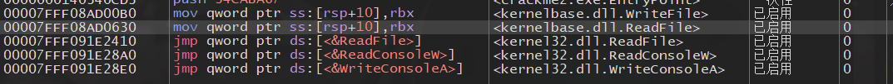
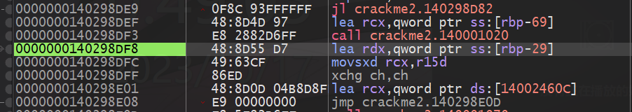
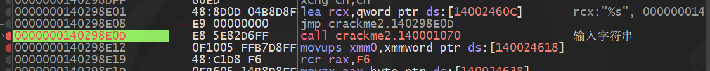
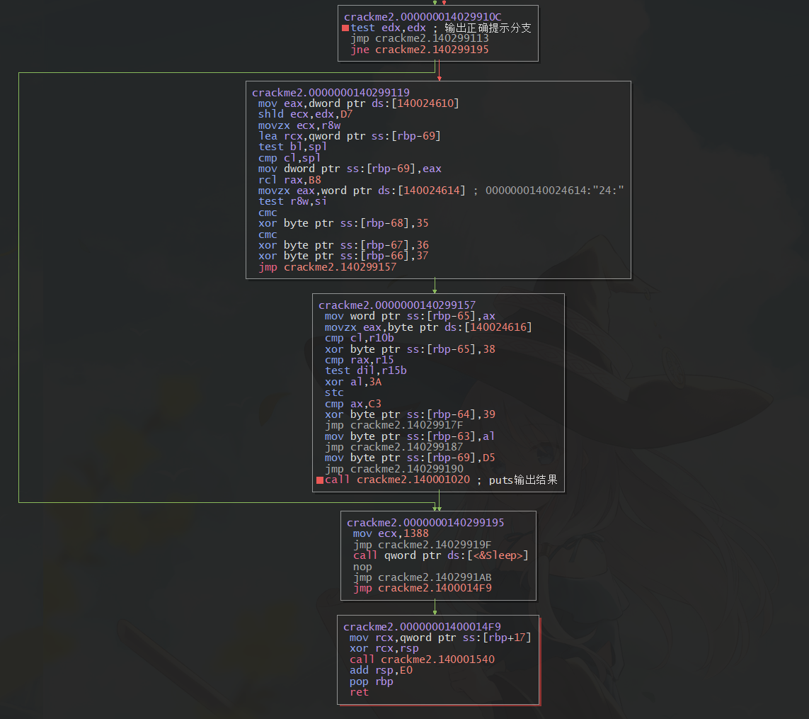

PC端VMP壳逆向分析
GitHub - noxke/TencentGameClientOpenCourse: 腾讯游戏客户端公开课2023 腾讯菁英班
静态分析
运行crackme2.exe文件，熟悉的检测到虚拟机弹窗
大概率vmp加壳，使用exeinfo工具验证

确认是vmp加壳，关闭环境，打开移动端题目分析
使用ida64打开程序确认加壳的部分
程序入口push call，典型的vmp特征，程序入口处加壳，无法静态定位到程序入口点，暂时不能确定是否对整个程序加壳，静态分析难度较大
动态调试分析
由于有vmp壳的存在，程序有虚拟机检测和调试器检测，使用ida绕过调试不方便，应此使用x64dbg进行调试分析
反调试屏蔽插件ScyllaHide设置如下
调试器运行程序，第一次会在程序入口点断下

此处为vmp入口点，继续运行程序

程序会在上图三处nop指令处断下，直接继续运行，如果反调试屏蔽正常，程序将进入运行状态

等待输入状态中，随意输入并回车后（两次回车），程序继续运行，几秒钟后程序关闭，和没有调试器运行时状态一致，因此已经绕过程序的反调试
由于不确定程序的逻辑部分是否加壳，通过API调用栈回溯的方式找到API调用代码
对可能的输入输出API下断点
kernel32.ReadConsoleW
kernel32.ReadFile
kernel32.WriteConsoleW
kernel32.WriteConsoleA
kernel32.WriteFile

重新调试运行程序，跳过几个检测断点后，进程在kernel32.WriteFile断下，查看参数寄存器
rcx为文件句柄，rdx为输出缓冲区，r8为输出字节长度，其他参数此处忽略
输出字符串为请输入flag:\r\n\r，正好为程序的输出提示，因此可以确认程序的输入输出分别使用ReadFile和WriteFile实现，关闭其他断点
查看调用堆栈
堆栈调用过多，逐层返回分析
当进程返回到0x140298DF8地址处时，继续Ctrl+F9后程序在ReadFile断下，因此程序的输出逻辑应该在0x140298DF8附近

断下位置应该是程序的输入位置，与输出时的回溯相同，查看调用堆栈，逐层返回分析
返回到如下位置，与上述的输出提示字符串位置接近

查看进程堆栈

输入的字符串地址储存在堆栈中，还观察到有格式化字符串"%s"存在，因此猜测次数为格式化输入函数调用
因此可以确认0x140298E12为输出提示字符串位置，0x140298E12为输入字符串位置，此时能够确定程序的逻辑部分未被vmp加壳，可以继续后续的动态调试分析
回溯堆栈确定程序的入口点

观察到用户层只有两层调用，因此当前层的上一层为程序的入口点位置

此时可确认程序的入口点OEP为0x140001510，下断点，主函数为0x1400010C0，输出提示字符串位置为0x140298DF3，输入字符传位置为0x140298E0D，对这几个地址下断点，重新调试运行程序，跳过检测断点后，进程在OEP断下

继续运行，程序在主函数入口点断下

继续运行，程序在输处提示字符串处断下

查看参数寄存器

只有rcx一个参数，为请输入flag:\n\r，因此该处调用的函数为puts，后续程序输出时可能还会调用该函数，对函数内下断点
继续运行到输入字符串位置处断下

查看参数寄存器

有两个参数，rcx为格式化字符串"%s"，rdx为地址0x14FE30，因此该处调用函数为printf，0x14FE30为输入缓冲区
继续运行到printf返回处，查看输入缓冲区0x14FE30处内存
此处内存为输入的字符串
上述操作完成了程序输入和输出的定位，接下来定位程序的校验部分以及结果输出部分
按G键切换到控制流视图
{kind=link}
其中的xmm寄存器操作部分可直接跳过，直接查看主函数结尾位置

一个分支跳转到程序结尾处，调用sleep等待5000ms显示结果，分支内调用puts函数，根据运行分析可知，当输入字符串时，程序不会输出反馈，输入几秒钟后程序停止，此逻辑正好对于该处代码，因此该代码块的上面应该为校验部分

此处明显的串比较特征，从[rax]和[rax+r8]分别取出一个字节进行比较，结束比较的条件为两个字节不相等，或者[rax+r8]处取出的字节为0
对此处代码下断点，运行程序到该处断下，查看rax、rax+r8

rax的值为0x14FE30，与scanf输入的字符串位置相同，字符串仍为输入字符串helloNoxke

rax+r8的值为0x14FE35，内容为字符串jZiBUViF0WUYwISp4qjx5YwucMNGpb4g
因此该处比较输入字符串与jZiBUViF0WUYwISp4qjx5YwucMNGpb4g是否相等，程序flag为jZiBUViF0WUYwISp4qjx5YwucMNGpb4g
运行程序验证
得到正确的程序flag